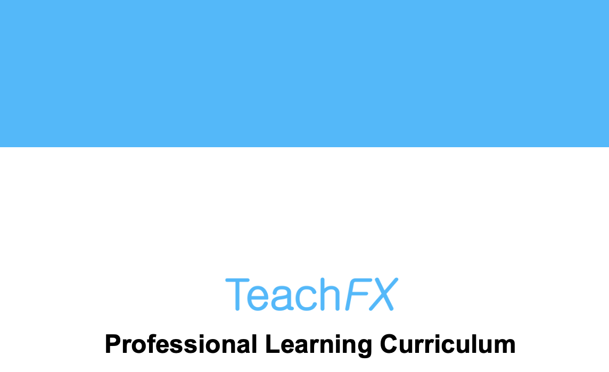

Featured Projects

SyncED - AI-Powered Differentiated Instruction
Designed and tested a tool for differentiated instruction that helps educators be in sync with their students' needs through detailed classroom insights and analytics. SyncED also uses Large Language Models to provide educators with research-based teaching recommendations tailored to their classroom dynamics, empowering them to improve lessons and foster a more engaging and supportive educational environment for students.
Key Features:
- Robust student profiles and formative feedback analysis
- Large Language Models for research-based teaching recommendations
- Detailed classroom insights and analytics
- Tailored recommendations for classroom dynamics

Honors Thesis: AI-Powered Personalized Learning
Led a comprehensive thesis research project evaluating Generative AI's effectiveness in personalizing scenario-based learning. Designed and conducted UX testing using mixed methods to assess personalized learning's impact on retention and motivation.
Key Features:
- Comprehensive evaluation of Generative AI in education
- Mixed methods UX testing for personalized learning
- Assessment of retention and motivation impacts
- AI-driven learning prototype development and testing
- Research findings published in Stanford Digital Repository

SMARTE Math Assessment Tool
Designed and built an updated version of SMARTE, a comprehensive math assessment tool for children, including UI/UX design, front-end development, and conversion from PsychoPy to jsPsych for improved user experience and scalabity
Key Features:
- Interactive math assessments for children
- UI/UX design with Figma and FlutterFlow
- Performance optimization with jsPsych
- Educational neuroscience research integration

TeachFX Curriculum Development
Designed a curriculum to teach TeachFX's five high-leverage practices, aligning with learning science principles. Created short, targeted lessons and activities grounded in curriculum design principles for seamless in-app teacher learning.
Key Features:
- Five high-leverage teaching practices curriculum
- Learning science principles integration
- Short, targeted lessons and activities
- Seamless in-app teacher learning experience

CK-12 Interactive Biology Activities
Worked as a learning design specialist and consultant contractor with CK-12, creating interactive educational activities in biology for e-textbooks and digital learning platforms. Designed and developed clickable components that enhance student engagement and understanding.
Key Features:
- Interactive biology learning activities for e-textbooks
- Custom SVG asset creation and design using Figma
- Interactive clickable components for student engagement
- AI-assisted development workflow using Cursor
- Learning design consultation for educational content
R Package for Data Analysis
Developed an R package to streamline data analysis and reduce redundant coding for PhD students.
Key Features:
- Streamlined data analysis workflows
- Reduced redundant coding for PhD students
- Automated result scoring system
- Improved research efficiency in neuroscience lab